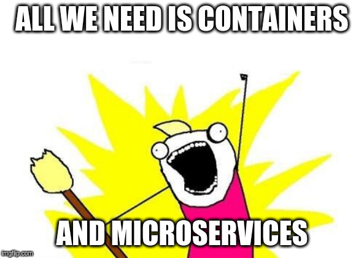
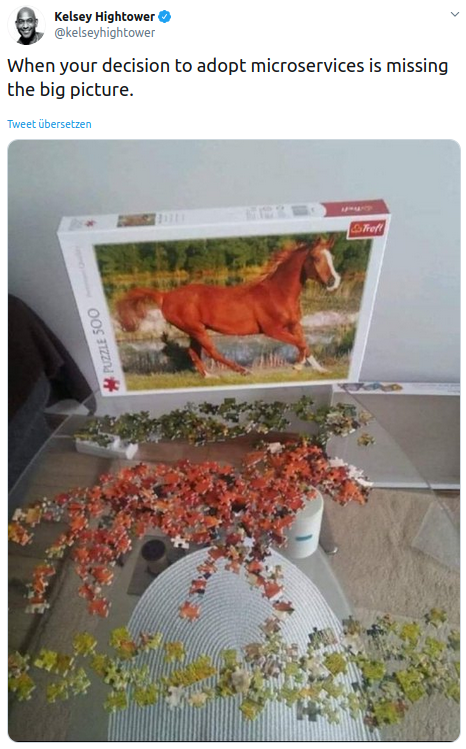

Who am I
- Felix Wiedmann
- DevOps Engineer @MARKANT SI
- Interested in Cloud-Native, Go Lang & Firefighting

Do we really?

Cloud Native Characteristics
-
Operate ability
-
Resilience
-
Agility
-
Observability
Which router/ reverse proxy do you use?
Traefik
- CNCF member
- Founded in 2016
- Developed by Containous
- Written in Go Lang
- Open Source (MIT)
- 27k GitHub Stars, 10M+ Downloads
- Current supported Versions 1.7 & 2.1

Features
-
Dynamic configuration
-
Observability Metrics & Tracing
-
HTTPS out of the box
-
TCP support
-
Canary deployments
Supported Providers
-
Docker
-
Kubernetes
-
Consul
-
Marathon
-
Rancher
-
File
Demo Time
Thank you for your attention!
-
@felix_wiedmann
-
/fwiedmann
-
contact@felixwiedmann.de